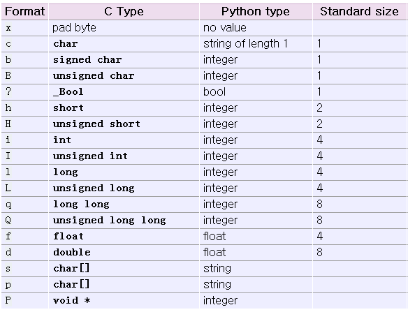

掌握了python的基本语法后，可以使用python shell来代替各平台带的计算器了:
>>> (50-5*6)/4.0 # 数学表达式
5.0
>>> a=100
>>> hex(a) # 十六进制
'0x64'
>>> oct(a) # 八进制
'0144'
>>> import math
>>> math.cos(math.pi / 4.0)
0.70710678118654757
>>> math.log(1024, 2)
10.0
>>> math.pow(2,3)
8.0
查看ascii码值:
>>> ord('a') # 字母转数值
97
>>> chr(97) # 数值转字母
'a'
简单的解析可以使用正则表达式来，第3章已经举了个解析objective-c获取类中属性的例子。
Note
正则对多重嵌套的处理会有问题，如html中<table>又有一个table，那解析就会乱掉。这时就要用 更专门的库了来解析html了，如BeautifulSoup就比较方便，可以用它做爬虫什么的。
展示把几个简单的java类的定义转换成objective-c的类定义。
使用pcurl构造http get、post请求，在第3章中已经给了例子
使用struct的pack、unpack快速生成、解析网络包:
>>> from struct import *
>>> pack('hhl', 1, 2, 3)
'\x00\x01\x00\x02\x00\x00\x00\x03'
>>> unpack('hhl', '\x00\x01\x00\x02\x00\x00\x00\x03')
(1, 2, 3)
>>> calcsize('hhl')
8
其中，类型对照如下:
wxwidgets是一个跨平台的GUI库，与qt类似，现在比qt活跃。wxPython是python对应的库。一个简单的窗口如下:
import wx
app = wx.PySimpleApp()
frame = wx.Frame( None, -1, '' )
frame.SetToolTip( wx.ToolTip( 'This is a frame' ) )
frame.SetCursor( wx.StockCursor( wx.CURSOR_MAGNIFIER ) )
frame.SetPosition( wx.Point( 0, 0 ) )
frame.SetSize( wx.Size( 300, 250 ) )
frame.SetTitle( 'simple2.py' )
frame.Show()
app.MainLoop()
Django是python的web框架。有了它，就可以使用python来写网页了。现在很多人已经开始用它来部署网站了，如国内新浪云SAE，就同时支持php建站和django建站。 有兴趣可以玩下。
sphinx-doc是一种基于python的文档编写工具。python的官方帮助文档就是使用它编写的(本文也是哈)。 sphinx-doc是reStructuredText，即使用带有简单语法的文本文件 来编写文件，然后通过编译，可以生成html,epub,man,pdf等多种格式。
使用文本文件编写，再使用工具编译生成文档(tex,docbook,sphinx都可算这个阵营)，和所见即所得(微软的word,mac的page等)的编写方式相比有啥优缺点呢？
优点
缺点
官方文档: http://sphinx-doc.org/contents.html
中译文地址: http://zh-sphinx-doc.readthedocs.org/en/latest/contents.html
用sphinx创建一个文档工程。并加入一些简单的内容
假设使用python调用megacli已经获取到服务器磁盘的状态，并保存为slot.log，其中一个Slot的信息(其中关键的4行已经用高亮标出)如下:
1 2 3 4 5 6 7 8 9 10 11 12 13 14 15 16 17 18 19 20 21 22 23 24 25 26 27 28 29 30 31 32 33 34 35 36 37 38 39 40 41 42 43 44 45 | Enclosure Device ID: 32
Slot Number: 1
Drive's position: DiskGroup: 1, Span: 0, Arm: 1
Enclosure position: 1
Device Id: 1
WWN: 5000CCA03B88FE17
Sequence Number: 2
Media Error Count: 0
Other Error Count: 2
Predictive Failure Count: 0
Last Predictive Failure Event Seq Number: 0
PD Type: SAS
Raw Size: 3.638 TB [0x1d1c0beb0 Sectors]
Non Coerced Size: 3.637 TB [0x1d1b0beb0 Sectors]
Coerced Size: 3.637 TB [0x1d1b00000 Sectors]
Sector Size: 0
Firmware state: Online, Spun Up
Device Firmware Level: W1CG
Shield Counter: 0
Successful diagnostics completion on : N/A
SAS Address(0): 0x5000cca03b88fe15
SAS Address(1): 0x0
Connected Port Number: 0(path0)
Inquiry Data: HGST HUS724040ALS640 W1CGPBJEAKSX
FDE Capable: Not Capable
FDE Enable: Disable
Secured: Unsecured
Locked: Unlocked
Needs EKM Attention: No
Foreign State: None
Device Speed: 6.0Gb/s
Link Speed: 6.0Gb/s
Media Type: Hard Disk Device
Drive Temperature :25C (77.00 F)
PI Eligibility: No
Drive is formatted for PI information: No
PI: No PI
Port-0 :
Port status: Active
Port's Linkspeed: 6.0Gb/s
Port-1 :
Port status: Active
Port's Linkspeed: Unknown
Drive has flagged a S.M.A.R.T alert : No
|
现假设，一共有12个Slot，12个Slot的输出，保存在文件 slot.log 中，请使用python的正则表达式，从该文件中提取如下内容:
正确的输出应该像下面这样:
Disk(s) abnormal list:
Slot 3 Offline
Slot 4 Offline
Disk(s) absent:
Slot 8
Disk(s) error:
Slot 0 error, MediaError 4, OtherError 0
Slot 1 error, MediaError 0, OtherError 2
爬虫可以使用任何语言，如果你只是做一个简单功能、不考虑效率的爬虫，用脚本是最快的。有些网站的网页相当简单，有些甚至直接使用正则表达式就能全部匹配出想要的结果。为了让大家对python脚本更有兴趣，这里提供一个脚本，让大家学习，它能实现从xxx网站上，批量下载种子，哈哈，[ 点击浏览代码 ]
Note
用脚本爬虫，爬href的链接是比较容易的，但是有些跳转链接是用js实现的，这些如果要爬的话，需要解释js，或者效率低点的做法，搞个ui，调用系统的浏览器控件来处理。
把常用的实现某些功能的代码归类，tag化，以后如果要用，只要使用关键字进行搜索，就能把代码提取出来。
选一个你比较熟悉的领域，使用sphinx编写入门教程或笔记。
{kind=link}